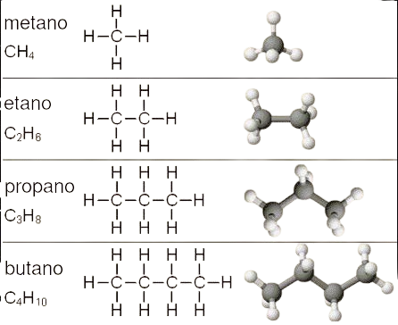

Clasificación de los hidrocarburos
Objetivo: Identificar los hidrocarburos según su clasificación (saturados, insaturados y aromáticos).
Los hidrocarburos son compuestos orgánicos formados únicamente por átomos de carbono (C) e hidrógeno (H). Representan la base de la química orgánica y son de gran importancia porque constituyen la principal fuente de energía utilizada por la humanidad, además de servir como materia prima en la industria petroquímica y en la producción de plásticos, medicamentos, cosméticos y otros productos.
